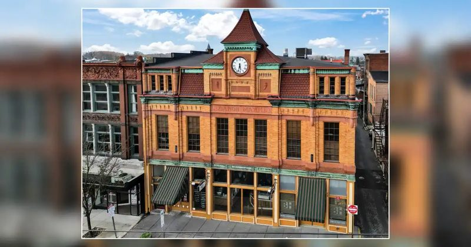
Lebanon's historic Farmers Market, mentioned recently in "The Spirit of Kindness" series has been back in focus in the news with the December 30th auction.
In that story about the roots of the Agape Family Shelter, readers learned of Lyman Nutting, the man who built and lived in the mansion at 139 South 9th Street. The story went on to tell of his other contributions to Lebanon businesses and infrastructure including the Samler building at 8th and Cumberland.
Among these accomplishments he was stockholder and director of the "Farmers Market," at the time known as the Lebanon Market House Company built in 1892. As his sons came of age, they worked with him and after his death took Lebanon's concept of markets even further. William and Harry Nutting combined the Lebanon Market House with three other markets to create the Consolidated Market House Company in 1908. Their vision ended an era of foul street markets, beginning a transition to the conveniences we take for granted today.
Here's how it unfolded.
Lebanon's Early Markets
These days Americans head to the local grocery store to purchase essentially everything and anything one could imagine. In many countries that is still not the case, nor was it even the case in this country in previous centuries.
Fortunately in this region of the country we still have expansive farms to remind us where food comes from. In previous centuries we all grew our own food and learned to trade with one another. We took our grain to the local grist mill to make the flour for our bread. Meats could be bought from a butcher, perhaps from our own livestock.
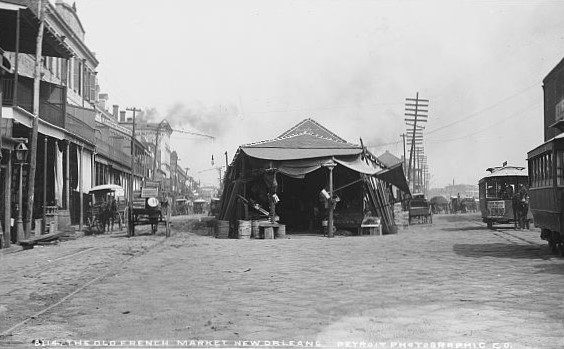
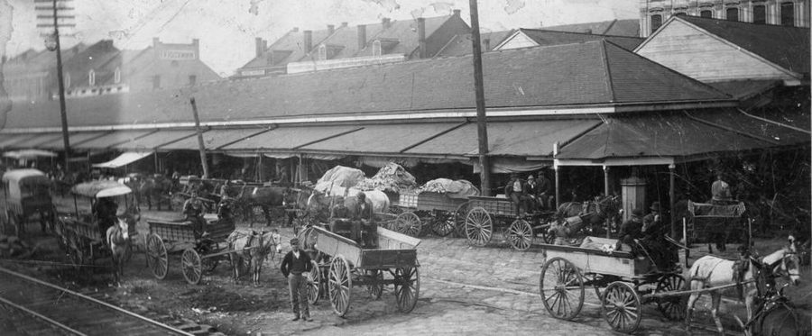
Like other American cities (like New Orleans above), as Lebanon grew so did its marketplaces. There were open air marketplaces, street markets, street vendors, market sheds. Some marketers operated from open wagons.
One Man's Street Market — Lebanon's James Fairburn (1847–1926)
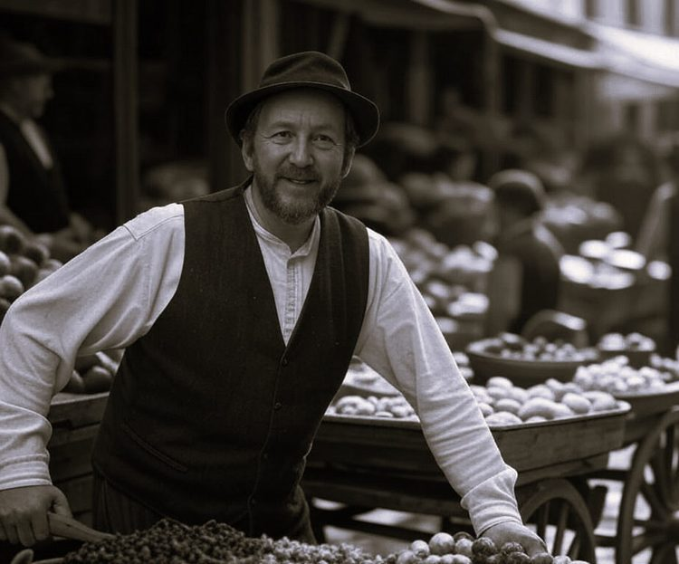
We Lebanonians herald the new year with a descending bologna, a tradition not yet 30 years old. Imagine, to be historically correct, that it might be celebrated with — an over-sized oyster (?).
In the spring of 1873 the Lebanon Daily News reported several visits by Civil War veteran James Fairburn, a merchant from Philadelphia. He lodged in the Lebanon Valley House hotel and began scouting different marketing opportunities.
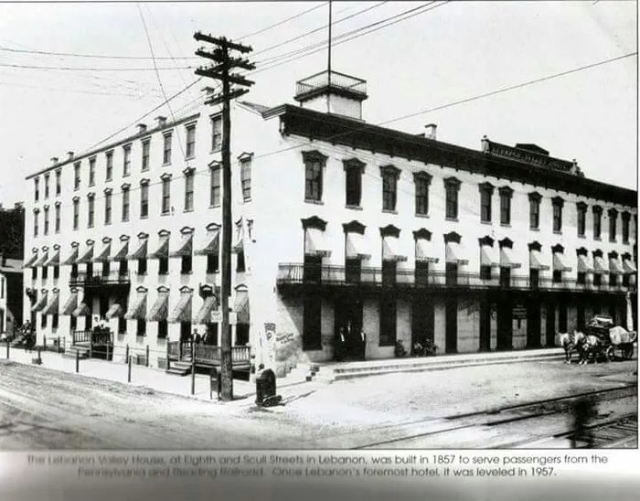
Then in February 27, 1874 the newspaper reported Fairburn's return from Philadelphia with eight tons of oysters, oranges, lemons, figs, and peanuts.
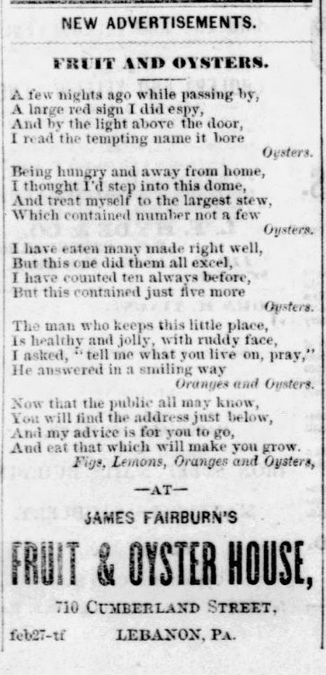
He must have hurried to the newspaper office with this poetic advertisement, which ran the next day and continued throughout the month of March. Within a week he moved his "Fruit & Oyster House" several blocks from 710 Cumberland to 15 South 9th Street and added "Philadelphia Oyster Bay" to the name of his business.
Philadelphia Beginnings
James Fairburn was born in 1847 in Philadelphia to his Irish father John Fairbairn and his Pennsylvania-born wife Mary (last name unknown). James grew up there with his brother Charles, who remained in Philadelphia until his death in 1929.
A young James enlisted in the Philadelphia regiment for 3 months in 1861 until discharged.
Jane Anderson, a young woman from Ireland became his wife in 1866 and they soon raised three children: Emma C. Fairburn Fitton (1864–1934), Anna Elizabeth Fairburn (1869–1894) and William Henry Fairburn (1870–1924).
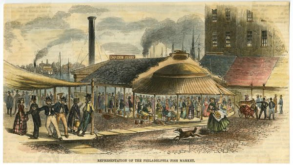
His occupation in Philadelphia was probably in the city's fish markets, until at age 26 he came to Lebanon seeking his fortune and a home for his young family.
"Truthful James" Fairburn
After Fairburn had sold his eight tons of oysters and produce, the next month he expanded, advertising "all kinds of fresh fish, cleaned and delivered to all parts of the town, free of charge!" His Norfolk and Chesapeake Bay oysters are "received daily" and sell for 40 cents a quart.
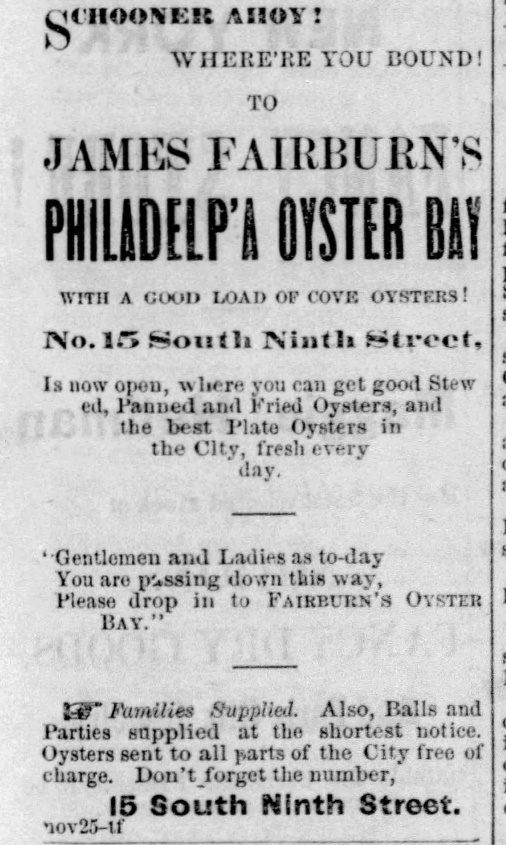
He advertised daily, often poetically, as the "Philadelphia Oyster Bay" enterprise, continuing business under various names at 11-15 South 9th Street into the 1900s. He and his wife Jane lived just down the street at 132 South 9th Street, across from the DeHuff family.
His seasonal business closed down by late spring, reopening in the fall, offering sweet potatoes and peanuts, with free delivery to any part of town. In the summer he kept a truck stand that moved about; one could track his whereabouts in the paper.
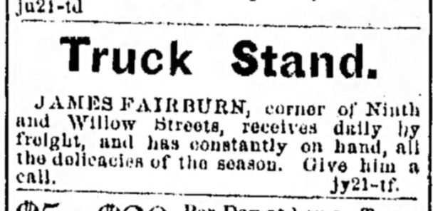
While he stored some of his wares in the basement of a building at Walnut Alley, he operated his outdoor stand as long as possible. He had fresh black bass for sale on one given morning. In the spring he took out advertisements announcing more fresh produce from Philadelphia and thanking the public for their continued support.
A Reformed Huckster
He may have enjoyed public support, but he often drew the wrong kind of attention.
"Huckster" once simply meant "a peddler," one who re-sells merchandise. The root of the word carries the notion of "to haggle," or "to hawk wares." More recent connotations re-color it as "one who sells or advertises something in an aggressive, dishonest, or annoying way (Merriam-Webster)."
In Fairburn's case, the latter was intended when the newspapers often referred to Fairburn as "the huckster." They capitalized on his reputation, giving readers amusement, even on the front page (of course they also benefited from his paid advertising).
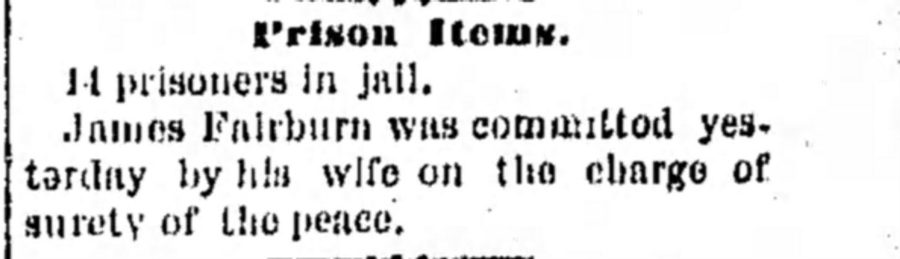
Consider brief stories of him being arrested for disturbing the peace, turned in by his own wife, and more than once.
The couple made the news in 1875 when she filed for divorce (apparently later reconciled).
Fairburn was arrested on another occasion when his temporary market stall encroached on too much of the pavement on 9th Street, providing further insight into the general public disgust with market men.
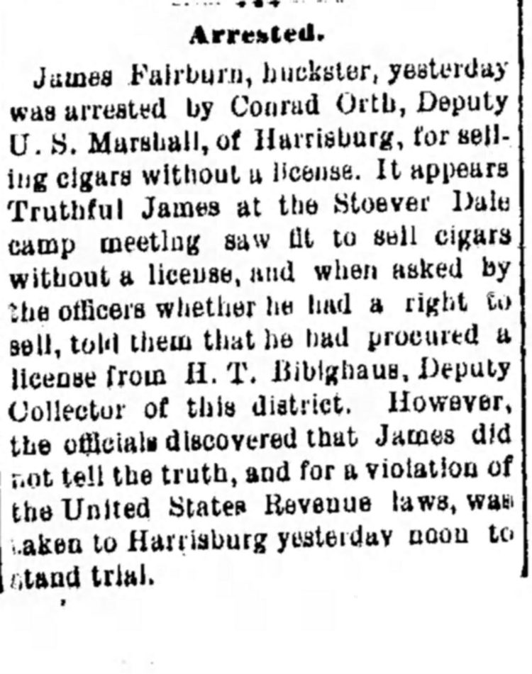
Fairburn took his truck stand around the county and to events like the Pinegrove campmeeting grounds, where he was tolerated briefly before being run out of the place. One time it was for selling cigars without a license.
Many years later when he visited the Pinegrove camp meeting with a large supply of cantaloupes, watermelons and peaches he informed the newspaper "that he did not receive much patronage and at about 7 o'clock in the evening he was stoned off the grounds."
Hollywood could have made a movie, James Fairburn a caricature of a scrappy, self-respecting Irishman picking himself up and dusting off again, and again.
In December 1880 Fairburn made the news, being found nearly frozen to death while selling his wares on the road in Berks county.
Again in the spring of 1882 the newspapers noted that Fairburn had been "among the missing for some time," yet "turned up today in Lebanon." Likely he had been away in Philadelphia between seasons.
Glad for the return of their colorful curmudgeon, another notice cheerfully noted his presence at 8th and Cumberland with a load of watermelons, cantaloupes, sweet potatoes and peaches from the Jersey shore. "Astonishingly low prices, my greatest pleasure is to please."
The Green Grocer
He appeared in the news almost as frequently as the weather report. Stories of remodeling his shop, and arriving produce shipments were the stuff of front page news.
Despite such a reputation as "huckster" later news items referred to him more kindly as "dealer in truck" and "the old oysterman." In one he was the "jovial street dealer." Later still, the "green grocer."
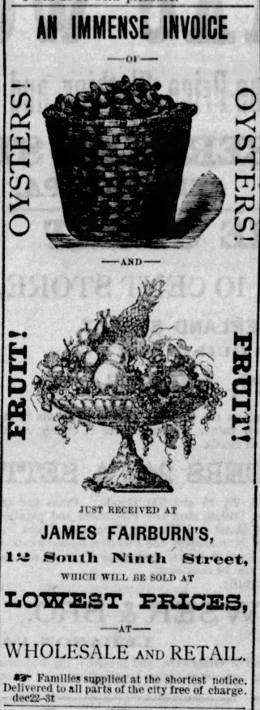
As Fairburn's reputation improved, he claimed in one advertisement "25 years in the business" which, if true confirms his early career as a merchant in Philadelphia in the thirteen years before testing Lebanon's waters.
Certainly Fairburn was not the only street marketer in Lebanon, but a city registry of grocers showed him as the only oysterman. He claimed his experience in Philadelphia and New York enabled him to outperform other dealers in both price and quality.
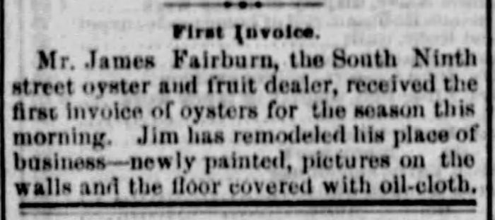
His reputation improved further, drawing sympathy on occasions when thieves broke into his warehouse or into rail cars containing his produce — Lebanon had scoundrels lower than hucksters!
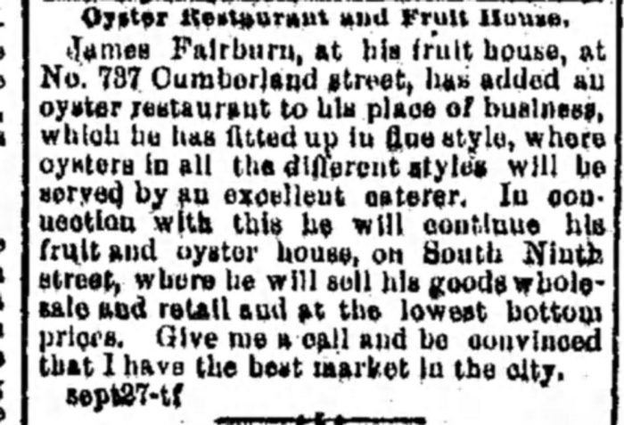
Among promotions, he once raffled off one of his horses at 10 cents per chance. The winner had no idea what to do with "the elephant," other than to give it to a friend.
Fairburn should have kept the animal; three months later while visiting a town with his vegetable wagon his horse suffered a seizure and died. He claimed he would not have taken $100 for his prized animal.
About That New Year's Eve Oyster…
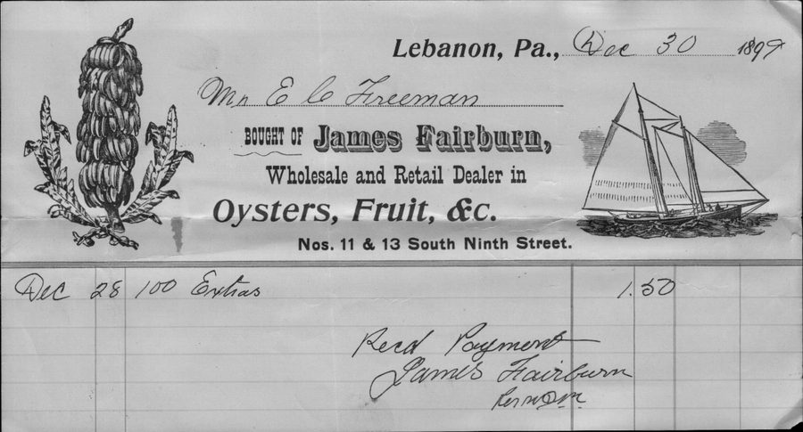
Oysters featured prominently in Lebanon culture. Edward C. Freeman, residing in Cornwall's Buckingham Mansion, frequented Fairburn's stand, especially around Christmas and New Years, buying "Prime" and "Extras" by the hundreds at $1.50 per lot.
These molluscs were not reserved for the higher classes; in a previous story Jacob DeHuff had conducted public events featuring "all kinds of cooked oysters."
(Thankfully, the New Year's oyster drop was never imagined becoming a "thing" here in Lebanon. This author prefers Lebanon bologna over oysters any day of the year.)
Like Father, Like Son
James put his teenage son William to work, who made news in 1885 having fallen from the wagon on Cumberland Street and breaking his wrist. Fifteen years later William was severely injured when the horse team became frightened by an automobile, causing a runaway and throwing him from the wagon.
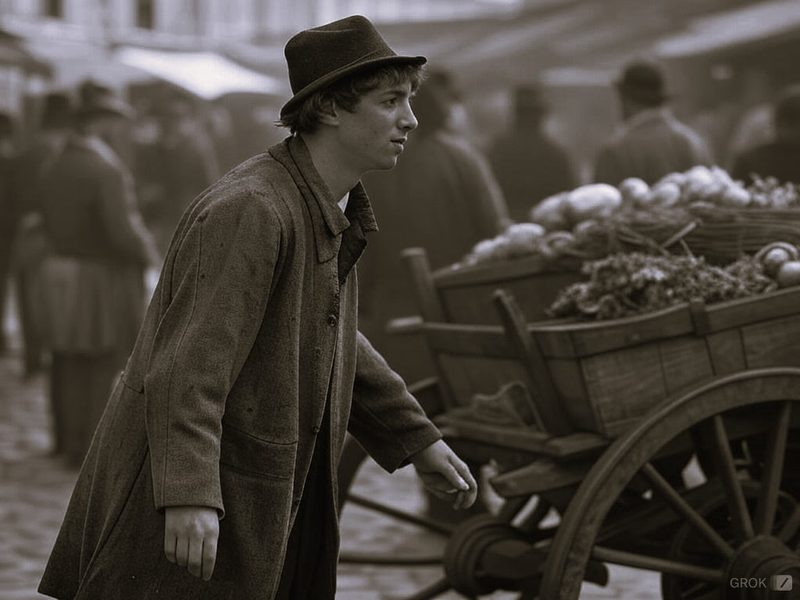
William was later remembered for hawking bananas to the crowds on Cumberland street in the evening. Imagine "BANANAS! — 25 CENTS a DOZEN!" on New Years eve and warm summer nights.
Business expanded with William's help. James had to advertise for another young man to open oysters for him; an unfortunate Philip Mease made news, put out of commission when gashing his hand with the sharp oyster blade.
Fairburn also hired an unmarried young man to work for his business, having acquired a team of horses from Pottsville that enabled him to put a truck on the road to distribute more of his wares. They boasted "James has an immense stock on hand and what he doesn't know about doing business isn't worth knowing."
End of an Era — Though Still Making News
The consolidation of markets near the end of the century began the end of Fairburn's career; he eased out of business over the next decade.
Eventually F. C. Rump took over operation of the oyster house.
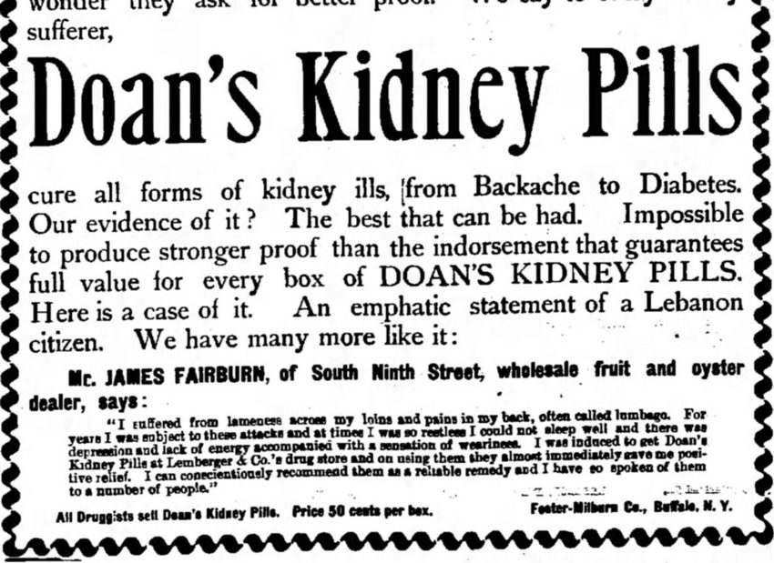
But James was still public news, featured in advertisements endorsing "Doan's Pills." He suffered from lumbago which confined him to his home two weeks at a time.
Fairburn's stature improved, having become friends of men like Mayor Gerhart, Lyman Nutting's son Harry, and Frank Gleim, the druggist. They made news for their occasional travels out of state to places like Florida and Cuba.
On his 74th birthday, Fairburn was honored as one of three "prominent Lebanonians." The days of the scrappy street marketer had passed.
By 1926, the year of his death, he and the "Missus" were living at 827 Chestnut Street and attended St. Mark's Reformed Church. He was buried with military honors in Philadelphia's North Cedar Hill Cemetery.
In the last installment of this story we briefly traced the roots of the Lebanon Farmers Market in telling the story of James Fairburn, huckster and real-life caricature of a typical street merchant.
Now, the continued story of the evolution and consolidation of Lebanon's markets in the late 19th century, setting the foundation for today's modern conveniences.
Lebanon's Early Grocers
Street markets were not the only place of trade for food.
There were many grocers where you went to get your canned and dry goods. Cornwall's Edward C. Freeman (mentioned in part 1 for his love of oysters) and his shopping habits have been preserved in great detail in the records left behind in his estate.
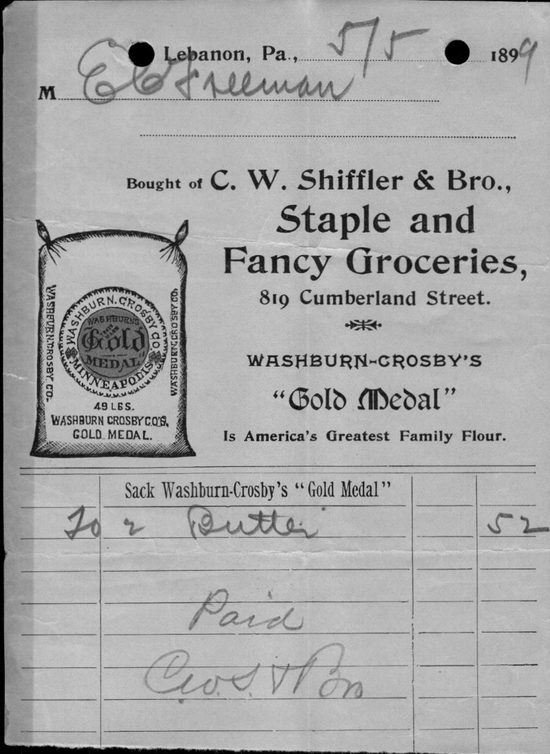
C. W. Shiffler & Bro. offered "Fancy and Staple Groceries" at 819 Cumberland, having taken over the establishment of J. A. Mark & Co, which had operated for years prior. Among their offerings of eggs, potatoes, etc., Freeman visited them several times a month to purchase several pounds of "Prescott Butter," two pounds for 52 cents.
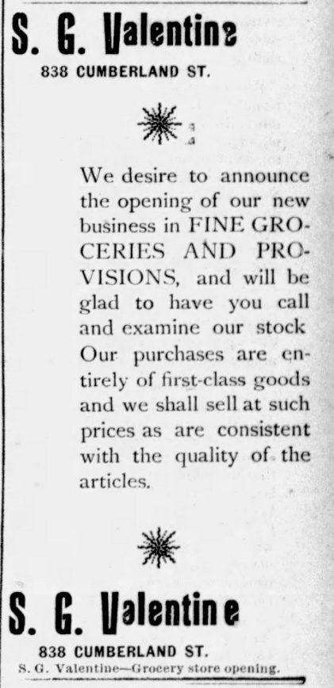
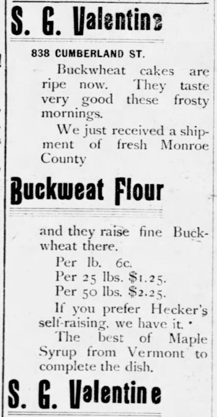
Just up the street at 838 Cumberland was S. G. Valentines "Fine Groceries and Provisions." Freeman stopped in here for bacon, ham (15 cents a pound), sardines, rice, sugar, "Bert's Snaps," roquefort crackers, olive oil, and … "sapolio."
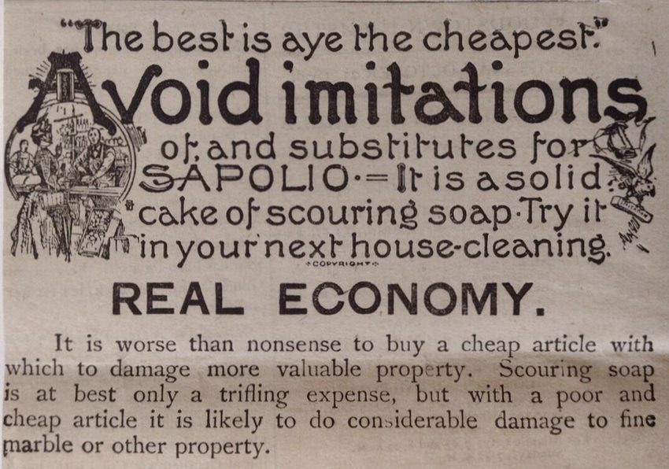
By the end of the 19th century, sapolio was one of the best-advertised products, rivaling any big-name brand you can imagine today. The scouring soap was used to clean everything in the kitchen, and even useful for bathing.
Incidentally S. G. Valentine served as pianist for the Perseverance Band in some of their concerts. Previously he had been in charge of Lebanon's Colebrook furnaces; he opened his grocery late in 1894.
Freeman (or one of his house servants who purchased on his account) might then head several blocks east to Shugar's Groceries & Provisions at 623 Cumberland. Here he shopped for beef, bacon, candles, maple syrup and butter.
John H. Shugar may have been one of the longest-standing grocers. Newspaper records for Shugar's store go back to 1872. He also acquired property 1874 at Cumberland and 7th, and began building three-story brick houses with at least one storefront.
He was carrying fresh fish in 1874, the year James Fairburn had come to town.
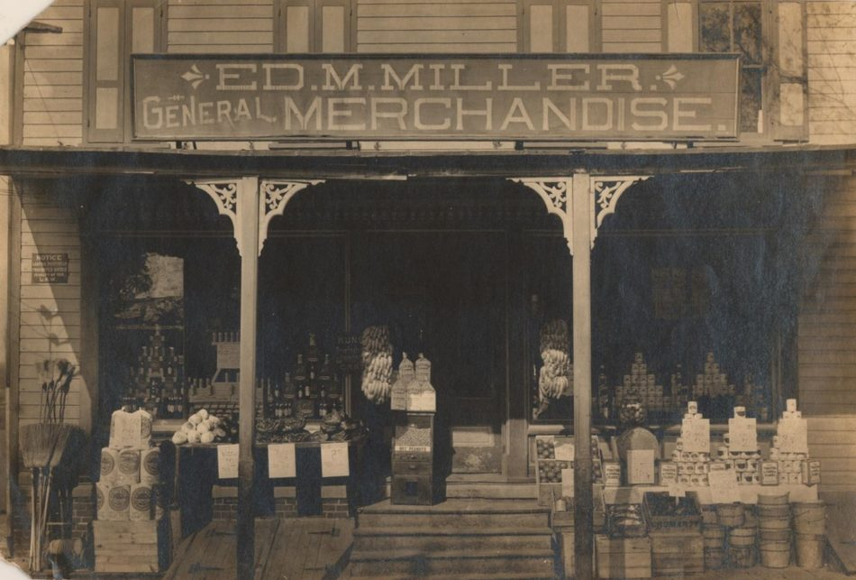
Ed Miller was another who got his start in 1891, with a store at market square on North 9th Street. Within a few years he opened four more "branch stores," the one above at 243 S. 10th Street, and others at 9th & Mifflin, 9th & Spring, and South 8th Street.
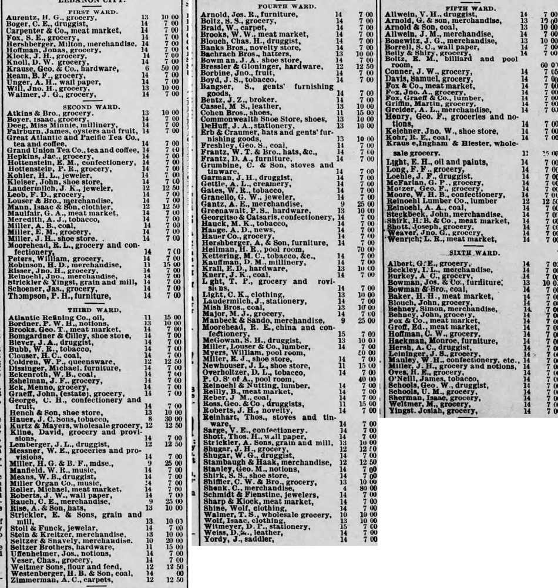
The list of all of Lebanon's licensed retailers, published periodically, shows many grocers operating in Lebanon (in 1893, having grown from 34 retailers in 1853). A class 14 license meant the proprietor conducted less than $5,000 in sales annually. Shugar's class 12 license indicated sales around $10,000.
The Outdoor Produce Markets
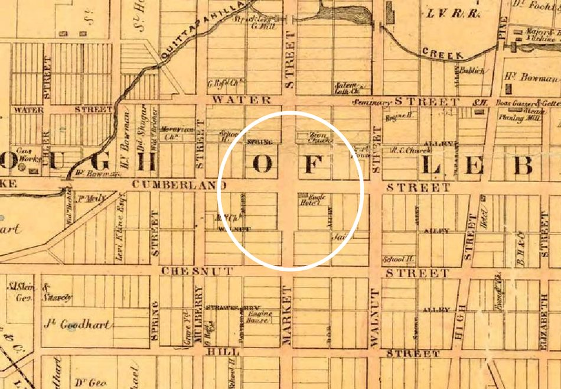
Looking back a few decades before the expansion of grocers, the largest marketplace was at 9th and Cumberland Streets. (Notice the names that precede the numbered streets today: "Walnut Street" then became 8th Street, and what was "Hill Street" now bears the name "Walnut." These were renamed prior to 1870.)
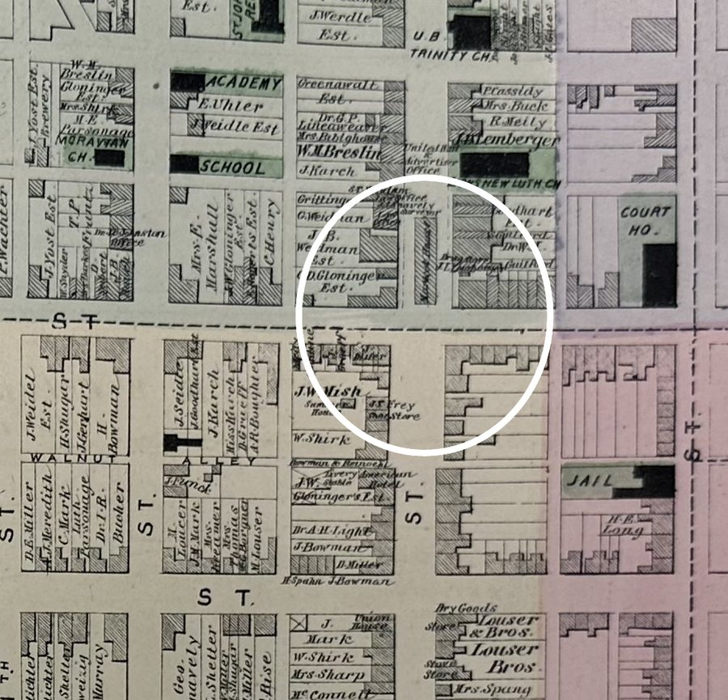
The pavilion possibly was replaced by an earlier one that stood on South 9th on the opposite side of Cumberland Street in the widened square.
There were other markets: Mr. Asa Weimer had organized one on North 8th near the railroad. Other "enterprising gentlemen" had a market at North 9th and Lehman, which became known as the Central Market House Company, near the railroad crossing. These convenient locations provided wares freshly offloaded from the trains.
Progress of a Sort
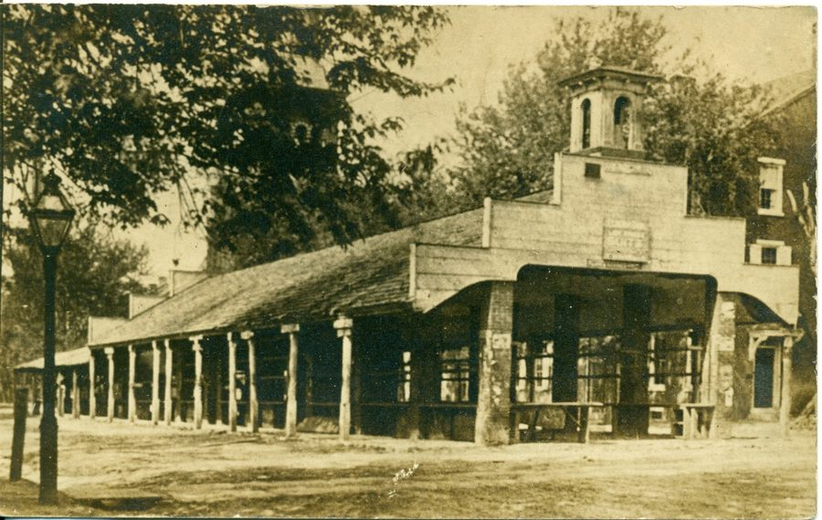
The public expressed growing demand ("we are a city!") for the construction of a new market.
"Where is our new market?" one editorial lamented in January of 1886. Two months later another story reported Mr. Weimer taking the lead in "giving the people of Lebanon better market house accommodations." He organized a meeting with local "capitalists" who realized "profit could be made out of a first-class market house."
For the lack of an appropriate structure, market would be held along the curbstones in front of places of public businesses, to the annoyance of pedestrians and injury to businessmen. In part 1 of this story, James Fairburn had been arrested for encroaching too much of the street with his stand.
Furthermore, "the accumulated filth on a hot windy day, settling down upon the edibles we purchase and put into our stomachs" and the freezing inconvenience of purchasing one's necessities during the winter, fueled the outcry.
Lebanon's Centralized Markets
You may have visited Philadelphia's historic Reading Terminal Market, which offers a glimpse, on a larger scale, of the development of Lebanon's markets. Before its construction in 1893 Philadelphia markets had been described as a "ragtag crowd of farmers, fishermen, and huntsmen hawking their goods all over the bustling settlement." By the 1800s they had evolved into a string of market sheds six blocks long along appropriately named Market Street.
Such conditions were considered health hazards and nuisances, and later became obstacles for the growing streetcar traffic. By 1859 Philadelphia's city planners ordered a change from the street sheds to two centralized markets.
Over time, the fresh air produce hucksters gravitated to various districts. As one wagon or "truck" established clientele in a neighborhood, others set up shop on the same block to take advantage of the draw.
Likewise, markets evolved in Lebanon, as they did also in Lancaster and Harrisburg.
A Harrisburg editorial in 1884 described the interest in demolishing its old market sheds "which still disfigure one of the principal business streets… a disgrace to the city… should not be permitted to exist in this age of progress."
The same editorial upheld Lebanon as an example to follow: "If Harrisburg people desire to see what a change has been made by the removal of the Lebanon market house they need but come here and witness the improved condition of the street. Market houses standing in the middle of streets are at best but eyesores and have a tendency to depreciate property in the vicinity."
A Turning Point, Finally
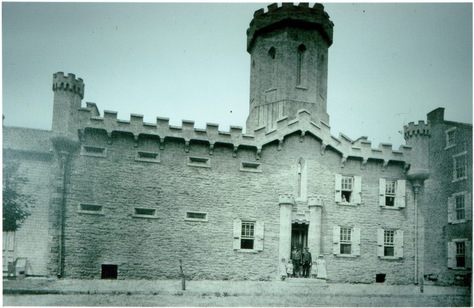
In 1891 the old city jail had been destroyed by fire and demolished. In April the same year, a board of directors was formed for a new market company, "The Lebanon Market House Company," which included Lyman Nutting, Jacob Shenk and Samuel Brightbill among others, eleven in all.
The directors planned the new Lebanon market on South 8th Street. They had visited several cities before declaring Lancaster's central market the finest they'd seen.
The plan called for building on the site of the old jail on South 8th Street, resulting in the beautiful structure that has stood on the spot today since 1892, known now as Lebanon Farmers Market.
Consolidated Market in 1908
Lebanon's markets progressed for several more years until 1908, with the formation of a syndicate that would control every market house in Lebanon. The market house owners combined their respective businesses into the "Consolidated Market House Company."
Although Lyman Nutting had passed away the year after the completion of the Lebanon Market House his sons William and Harry remained very much in control of his businesses that had been modernizing the city of Lebanon. They were also central in the new syndicate, along with Jacob Shenk, S. L. Light and others.
In addition to "Shenk's" market house on South 8th Street, other markets named in the consolidation were "Seltzer's" on North 9th Street (the Central Market House Company), Asa Weimer's on Sixth Street, and Martin Wengert's on Liberty Square.
The reason for consolidation was profitability. Shenk's, the largest market had never paid a dividend and the others made barely one or two percent. They believed that centralizing would improve returns without burdening the farmers, the renters or the general public.
They also intended to close one of the other houses as there were more stalls than needed.
Those outdoor curbside stalls in their day rented at $40 to $50 a year. The newer houses had provided well-lit, comfortable accommodation renting for only $10 to $30 a year. Consolidation would also result in uniform rents, giving equal privilege to all farmers.
Last Stop: Lebanon's Central Market
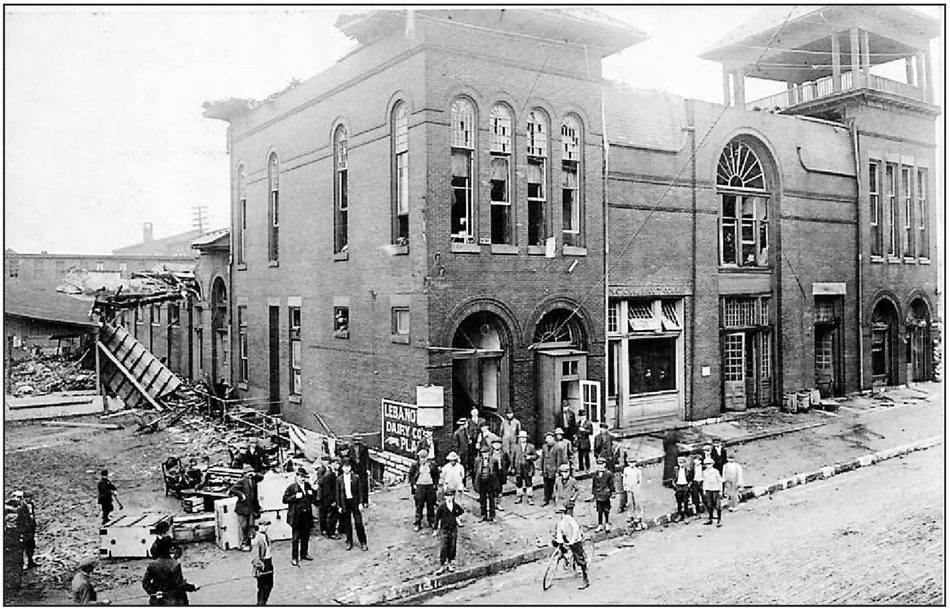
For those curious about the location of the Central Market, which had been hailed as one of the city's first modern market houses, it no longer stands. In its place is the 9th Street bridge that passes over the railroad.
The Market suffered a significant fire in 1914. The building was repurposed for a textile business and again destroyed by fire in 1984.
Lebanon's remaining Farmers Market on 8th Street is a treat to visit. When you go, be sure to pause and breathe in reminders of our history.
Mike Trump (maps and photos). Cornwall Manor for Edward C. Freeman's shopping records. Helen Tangires' "Public Markets."
Originally published as a two-part series on LebTown, January 8 – 16, 2025.